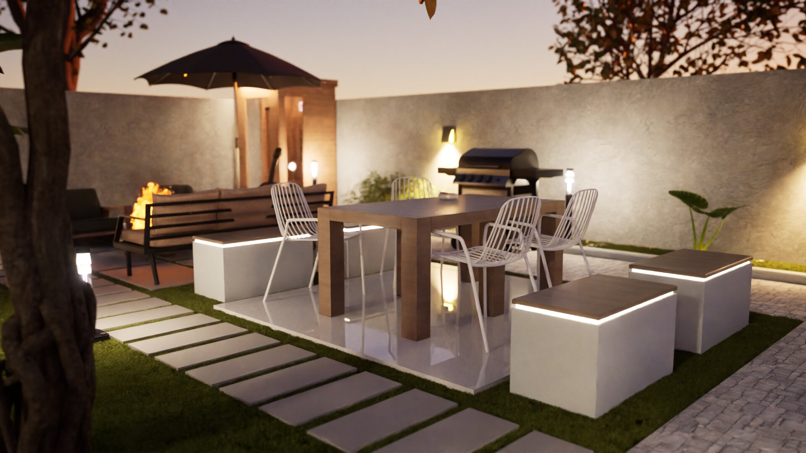

Bij HuisVisual.nl geloven we in de kracht van visualisatie om droomtuinen tot leven te brengen. Met onze geavanceerde 3D-renders transformeren we schetsen in realistische beelden die de essentie van uw buitenruimte vangen. Of het nu gaat om een weelderige landschapstuin of een minimalistische stadstuin, wij zorgen voor een ongeëvenaard voorproefje van uw toekomstige groene oase.
